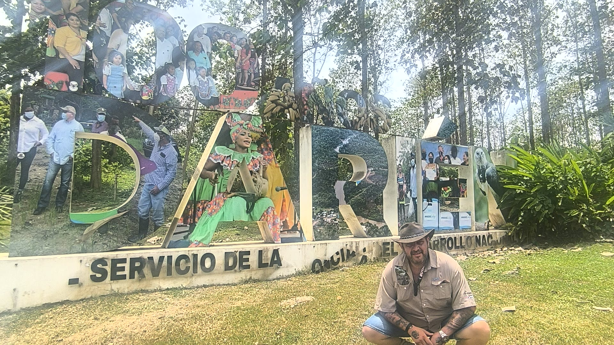

Blog · 14. 9. 2023
Mé začátky v Kostarice

Rozhodl jsem se s vámi sdílet své poznatky, dojmy a názory na život tady v Kostarice. Předem upozorňuji – všechno, co budete číst, je čistě můj osobní pohled na věc.
Začátky v tomhle nádherném koutě světa nebyly jednoduché. Ale ruku na srdce – kdy jsou? Opustit svůj známý svět, kde člověk ví, jak co funguje, rozumí lidem i zvykům svého kraje, není nikdy snadné. Když jsem přiletěl s batohem na zádech a španělsky uměl sotva pozdravit a poděkovat, najednou jsem stál tváří v tvář úplně jinému světu, jiným lidem, jiné kultuře.
První kroky v Turrialba
První město, které jsem poznal, byla Turrialba. A přiznám se – všechno bylo úplně jiné, než jsem si představoval. Domy, provoz, ulice, obchody... Jako Evropan, vychovaný v systému plném příkazů a zákazů, jsem se nestačil divit, jak tady všechno funguje tak nějak „po svém" – a přesto to funguje skvěle!
Co mě překvapilo nejvíc, byli místní lidé. Procházel jsem se neznámým městem, fotil, koukal kolem – a lidé se na mě usmívali, zdravili mě, ptali se, jak se mám. A loučili se kouzelným „Pura vida!"
Pura vida – životní filozofie
Dnes už tu mám rodinu, jsem ženatý s místní kráskou a Ticos mě přijali mezi sebe. Myslím, že to je i díky tomu, že jsem od začátku přijal místní způsob života za svůj. Snažil jsem se komunikovat, i když moje španělština byla tehdy víc úsměvná než správná. A když zjistili, že nejsem Američan, ale Čech, otevřeli mi dveře ještě víc.
„Lidé si povídají, usmívají se. Žádný stres."
Kostarická dochvilnost
Některé věci mi trvalo přijmout. Například dochvilnost. V Evropě jsem byl zvyklý být všude o hodinu dřív. Tady? Domluvíme se, že vyrážíme v pět ráno k moři... a v pět ráno si holky teprve myjí vlasy. Dřív bych šílel. Dnes sedím v pohodě před domem, koukám na videa a čekám – pura vida, přátelé.
Stejné je to s odpovědí „mañana" – co nestihneme dnes, uděláme zítra. Ale hlavně v klidu. Ve frontě v supermarketu nikdo nereptal, nikdo nervózně nekoukl na hodinky. Lidé si povídají, telefonují, usmívají se.
Co Kostarika udělala s mým zdravím
Jeden klient se mě zeptal, jak se na mém zdraví podepsal život v Kostarice. Odpověď je jednoduchá – pozitivně. Přijal jsem místní klid, přestal jsem se honit a stresovat. Přestal jsem chrápat, spím jako mimino, mořská voda mi vyléčila staré rány. Tělo se uklidnilo, mysl také.
Rytmus života je tady nádherný – každý den vychází slunce v šest ráno a zapadá v šest večer. Po celý rok. Žádné přetáčení hodin, žádné rozhozené biorytmy. Bydlím v provincii Cartago, kousek od Turrialby – v horách, kde je příjemných 25–30 °C přes den a kolem 15–20 °C v noci.
Kostarika je země kontrastů, a právě to ji dělá tak kouzelnou. A mně změnila život.
Chcete zažít Kostariku s Martinem?
Martin zná každý kout Kostariky. Plánujte s ním svůj výlet na míru.
Napsat Martinovi